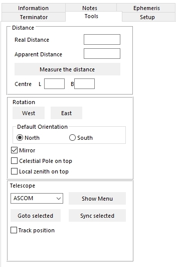

Virtual Moon Atlas
Quick user's guide
The following examples will help you to well use the "Virtual Atlas of the Moon" and give you all informations needed for good settings. The versions compatible with the described actions are indicated:
How to well set the "Virtual Atlas of the moon"
How to view the Moon for a given date and hour to prepare an observing session
How to find an unknown lunar formation that you just discover the existence
How
to study a known formation and know how and when to observe it
How to search a formation of the libration
zone and its next observing date
How to look at a formation in its geological context
How to generate documents usable "in the field"
How to study the Moon Far Side
Scientific surveys of the Moon
How to study a specific type of lunar formations
How to study the origin of lunar names
How to well set the "Virtual Atlas of the Moon"
A good setting of the "Virtual Atlas of the Moon" is necessary to better use all its features.
The authors have wished this software to be usable by the greatest number of people despite of the machine resources needed. This is why there are somme settings to do.
Owners of the most powerful computers will access all the functions in great comfort. The speeder the microprocessor, the more graphic memory inside and better will be the resolution and shorter the computing time.
1) First settings
The "Settings panel" is managed in the ATLUN module.

After launching the ATLUN module, click on the "Configuration" menu. Click on the "General" thumbnail. Type your observation site coordinates, so that, librations could be computed.
Fille the case "Use computer date and time".
Then, choose the language. It's the language of the software and of the database and French and English are provided in the basic package. In the other languages available, versions produced by others volontary colleagues, it's often only the software interface. Some databases have been translated too in some languages.
Click on the "Databases" thumbnail.

Attention : The more you selected databases, a more bigger number of formations must be managed by the module. When selecting the "Salamuniccar" and "Robbins" databases, this number can go up to more than 1 million ! So, this will slow down considerably the maps display performance.
In the "User database loaded from DATLUN" frame, your own databases will be displayed after you tranfered theme in the VMA using the DATLUN module.
Click on the "Display" thumbnail.

You can fill the "Show the phase" and/or "Show the libration" boxes if you wish it.
You can also apply your favorite color to the point showing the formation on the map, the name of the selected formation and the color of the name of the neighbourhood or principal formations. You can also decide if you want to display them if you fill or unfill the "Show label" and/or "Show marks" boxes.
If you fill the "Mark the point of the maximum libration",
a well visible arrow will be displayed around the lunar disk to show
you, where the libration will be maximum for the date and hour that you
will select soon. You will notice soon that the arrow size is
proportional to the libration intensity.
The "Mark size" cursor allows you to magnify or reduce size of the libration arrow and of the point showing the selected formation.
If you fill the "Center label on formation", the label will masks more the formation, but will be placed juste above it.
We recommand you to fill the "Short label" case if you use the "Satellites formations" and/or "Unnamed formations"
databases, so that the display will not be covered with long names,
according to the huge nimber of registered formations in these
databases.
You can choose the labels font when clicking on
the "Labels font" button. It will be certainly necessary to you to try
several possibilities coupled with the labels density and their color
to find the best display for you.
The "Label density" cursor allows you to increase or reduce the number of names formations displayed at the same time on the map.
Click on the "Textures" thumbnail.

The three altrenative cases "Phase without relief", "Phase with dynamic relief" and "No texture" are used to activate or not the display of dynamic shadows on the lunar terminator.
If your computer has not a performing graphic card, fill the "Phase without relief" case and choose only the "Airbrush relief with or without albedo" textures or uses the other textures but with a limit to the 1 to 8 levels..
This tab presents a selection matrix for selecting textures according to the applied zoom level. This new function is a very useful way for choosing the textures display.
You can choose to keep the same texture for all zoom range or select as above a progressive change parallel to the zoom change. You have just to select the wished radio button. There can only have one texture choosen for a given zoom level.
If you don't want to see any texture, fill the "No texture / To use with an overlay alone"
We think that it's better to use textures with increasing resolutions according to increasing zoom level. There are 6 resolution levels for the texture. The software loads automatically the levels indicated according to the zoom applied to the map :
The Clementine texture goes up to 4 levels.The "Unified geological map" texture goes up to 3 levels
The LRO, LOPAM, LRO-Kaguya and Chang’é 2 textures have 6 levels.
The textures "Airbrush with albedo", "Airbrush without albedo" go up to 3 level.
The textures "Clementine photographic" and "Chang’é 2 photographic" are used to show the aspect of the formations under the highest possible solar lighting.
The "LRO-Kaguya shaded" texture is particularly suitable for displaying scientific layers.
If you wish to display an historical texture, you can choose one in the scrolling list juste at the right of the "Historique" case.

Choose the one you wish by clicking on it.
Click on the "Overlay" thumbnail.

You can apply above the texture that you have choosen in the "Textures" thumbnail, a layer whose transparency can be set so that, you can continue to the texture below.
The "Relief aerograph sans albedo" and the "LRO - Kaguya - Shaded "
textures are recommanded to applay the overlays, according to the power
of your computer. You can also choose not to display a texture in the "Textures" thumbnail of the "Configuration" menu (See above)
If you wish to display an overlay, fill the case "Show overlay" and choose one in the scrolling list below.
If you wish to display a coordinates grid, fill the case "Show grid" and choose the "step" of the grid with the cursor.
Click on the "Images" thumbnail.

Downside, you will find the images directories list. It will be possible for you to add new directories for your own images and others as you want.
The "Check for optional features" allows to the module to determine if some of the pictures libraries stored on the VMA Web site have to be downloaded.
Click on the "Eyepieces" thumbnail.

Type the names of your eyepieces in the list. Fill the "Field" column and help yourself with the "Compute" button above. We think it's a good option to sort your eyepieces and combinations from the less to the more powerful. If you click on the right columns, you can activate (Green) or deactivate (Red) the "Left-right" (<->) inversion and the "Up-down" (N/S) inversion. So, if you own a Newtonian and a refractor, for example, you can program the exact views that each of these instruments will gives you.
Click on the "CCD" thumbnail.

If you own a camera or a photographic body that
you wish to take pictures of the Moon, type the names of these devices.
Then fill the columns "Width" and "Height" with the help of the "Compute" button and the associated fields above.
Click on the "Printing" thumbnail.

First, define the documents margin. We advise you to choose 10 mm, so that all the documents according to a single formation could be printed on a single page. The "Information text width" allows you to choose database datas printing police size. Here, we advise you to try several sizes and choose the best.
Fill the boxes of the documents you want to print. The three documents can be printed on the same page if you use a sufficiently small police size. We advise you to fill the "White background" box to reduce printing ink quantity when printing maps.
Abd now, validate your settings choices by clicking on the "OK" button. For some of these choices, you will be obliged to quit the module and relaunch it.
2) Other settings
Now observe how your graphic card manages the
display when you zoom or when you move the map. Is it slow or jerky ?
If yes, you must improve the settings.
Click on the "Setup" thumbnail to the right of the screen.

It shows an interesting tool for the final configuration. At the bottom of the frame, you see an fps (Frames per second) counter called "Refresh rate". The higher the number, the smoothest the display.
Slide now the "Penumbra" cursor to choose the transparency degree of the night side. You must know that the display is speedier when the dark part is completely black. This permits also to mimic the "Earthshine" effect.
Slide the "Diffuse" cursor. It manages the general quality of the map.
Slide the "Direct" cursor. It manages the width of the blurred part at the terminator. The display is speedier when it' positionned on the left and in précision when slided on the right.
But, the setting that influences the most the display is the one managed by the "Smoothness" cursor. This cursor is used to manage the precision of the 3D sphere on which are applied texture and overlay. Completely on left, it's not a sphere but a polyhedra with faces.
Moving the cursor to the right will increase the
number of faces, but this setting becomes more and more greedy in
ressources. Going to a better spherical shape will improve the
formations places precisions on the 3D map.
You have now to adjust this various cursors to obtain an acceptable compromise between smoothness and fluidity. It's not good to go below a 4 fps display rate since it can block the computer.
If you know well Open GL, can also try settings with the "Force texture compression" and "Anti-Alias" cases. You must restart your computer so that these modifications will be taken.
Click on the "Tools" thumbnail on the right.

Fill the "South" box if you use a Newtonian so that the map display will be as you can see the Moon in your telescope. Or fill the "North" and the "Mirror" boxes if you use a refractor or a Maksutov or a Schmidt-Cassegrain telescope.
Validate all your choices clicking on the "OK" button.
You can now enjoy all the power of the Virtual Moon Atlas " !
Have a good observation !
How to view the
Moon for a given date and hour
to prepare an observing
session
You wish to know the aspect of the Moon for a next day to prepare your observing session, maybe for two different reasons :
- You would like to observe "Deep Sky" objects and Moon presence is not wishable.
- You would like to observe the Moon and know visible formations on the terminator.
Once the software started, the "Map window" appears displaying a true 3D lunar globe. If you haven't yet done it, go inside the "Configuration" menu and fill the "Phase" and "Libration" boxes. press "OK". You can also click on the "Phase" and "Libration" buttons in the buttons bar on the top.
Click on the "Ephemerisis" thumbnail.
- If it's an immediate observing session, click on the "Now" button and the software will synchronize on the "System" date and hour of your operating system.
- If it's for a future observing session, set date and hour with the upper arrowed boxes and click on "OK" button.
The lunar globe shows you now phase and librations for choosen date and hour.
Clicking on the "Ephemerisis" thumbnail, you can see in the right window all the needed datas.
Then, click on "Terminator" thumbnail
In the right window, you can see now a list of formations visible on the terminator.
You can limit this liste with your interest level using the upper scrolling list. You can also reduce this list to the formations only easily observable in your instrument, choosing the nearer of yours in the "Instruments" scrolling list.
You can sort this list according to name or latitude formation activating the corresponding box.
Click now on the list first formation and its position is displayed on the lunar disk. Scrolling down in the list with arrowed keys will permit you to see the position of other formations and have a good idea of termiator and prepare your observing session.
How
to find an unknown lunar formation
that
you just discover the existence
You have just dicover in a magazine or in a book about the Moon, thexistence of an interesting lunar formation you just don't know the existence before. The Virtuel Atlas of the Moon will indicate you its existence.
Start the ATLUN module. We will choose for our example "Mons Rümker" that your new information has just revealed you the existence.
Click on the "Information" thumbnail. In the "Search" input zone at the bottom of the frame, type with upper case letter and without any accent or " ¨ " :
MONS RUMKER
Then, click on the "Search" button. In a few seconds, you can see Mons Rümker position indicated on North - West part of the lunar disk.
Please, also note that this powerful search function is very powerful because you can use "jokers : *
So, if you type
MONS*
You can see the positions of all formations whose official name begins with "MONS". You have just to click on the "Next" button to see them one after the other.
How
to find an unknown lunar formation
that
you just discover the existence
You have just dicover in a magazine or in a book about the Moon, the existence of an interesting lunar formation you just don't know the existence before. If you own a computerized "Goto" mount which accepts the ASCOM protocol, the Virtual Atlas of the Moon will track it directly on the Moon.
First of all be sure that you have installed the good ASCOM drivers on
your computer. If not, go on the internet to the site
http://ascom-standards.org/
Connect your mount to your computer
Start your computer and the ATLUN module. Go to the "Tools" thmbnail on the right.
Then use the telescope pad or a planetarium software to target the Moon.
Click on the "Show menu" button and launch the connection.
Begin centering a well known formation in the eyepiece fieeld and select it on the map. Push the "Sync selected" button for initializing telescope coordinates on this position.
It's also possible to make this operation on a star near the Moon with the planetarium program.
After, check the box "Goto selected" so that the map displays always the telescope position.
If your telescope can do automatic pointing, you can now click on a formation on the map, or choose it with the "Search" function of the "Information" thumbnail and then click on the "Goto selection" button
How
to study a known formation
and
know how and when observe it
You would like to observe a particularly interesting formation, or you have just discover in a magazine or a book about Moon, a special interest for this formation. The Virtual Moon Atlas will indicate you all the informations it contains and when you can observe it well.
Start the software. We will choose for our example the "Alphonsus" crater that your new information has just revealed you an interesting detail.
As you now well where is Alphonsus, just slide the upper zoom cursor to half its way. You can also use your mouse wheel if you own one. The lunar globe magnifies.
Click on the map or globe with left button, stay clicked and move the mouse to move simultaneously the map, as grabing it, to center Alphonsus. It's is now visible and you click in its center. Its name is displayed confirming you that you were right. If you made a mistake, you have just to search it as described above.
When you identify Alphonsus, use the "Center" button. Then, map shows you that it's a not too old crater with a central peak and pretty high walls.
You can read all the detailed informations about it in the right window "Information". You will find here informations about the origin of its name, on its position, its dimensions, a complete description, observing advices and the official datas of the International Astronomical Union (IAU).
Note also the "Profile" frame above the right window that gives a good idea of a cut of this crater.
For a well understanding of the description, click on the "Picture" button. This will launch the PHOTLUN module. An horizonatl frame will show you pictures available in the various pictures libraries of the VMA that you have downloaded and installed. Remarkably detailed pictures show you morethan in every terrestrial instrument. Click on the one you want to display and it appears in an independant window.
You can adjust the picture size and definition using "Zoom +"
and "Zoom -" buttons of its window. Lifters are used when it's
too big to fit in the main window. You can also set light and contrast.
The picture shows you well the black dots, the central peak and the rilles
indicated in the description and even more if you consider all the craterlets
visible inside.
How
to search a formation of the libration zone
and
its next observing date
Discover together now the last face of the power of the "Virtual Atlas of the Moon". The problem is to search a formation located in the librations zone which only periodically visible. We will use the famous "MARE ORIENTALE" ... which is on the East side of the visible face , but now on the West part since the International Astronomical Union has changed the orientation of lunar maps.
Start the program. Click on the "Information" thumbnail. In the input zone of the upper scrolling list, type with upper case letter and without any accent or " ¨ " :
MARE ORIENTALE or *ORIENT*
The, click on the "Search" button. In a few seconds, you can see Mare Orientale position indicated on South - West part of the lunar 3D globe. Maybe it's really visible according to the date taken by the software
Slide the zoom cursor in its middle. The 3D lunar globe becomes bigger.
Click on the globe with left button, stay clicked and move the mouse to move simultaneously the map, as grabing it, to center Mare Orientale.
You can read all the detailed informations about it in the right window. You will find here informations about the origin of its name, onits position, its dimensions, a complete description, observing advices and official datas of the International Astronomical Union.
These pictures show you Mare Orientale in a way impossible to observe from Earth, but how do we see it at the best from Earth ?
Close now the picture window with a click on its "Close" button to come back to the globe.
Click on the "Configuration" menu, than on the "Display" thumbnail and activate "Phase" and "Libration" boxes if it's not yet done.
Click on the "Ephemerisis" thumbnail and with the ">>" button, go in the future to a one day per click rate.
You will then witness the slow move of the lunar globe and the terminator path. Note the arrow showing you the place where the libration is maximum and how its size varies with the libration intensity.
Observe as Mare Orientale is from times to times more visible. A good observing period will be when the position is good and on a Full Moon day. With a sufficient clicks number, you will find a such day in the future. it will be indicated in the date boxes above the videorecorder buttons. Look at the hour to confirm it's not during the day. Now, you have just to wish that you will be free on this night and that meteorology will be favorable !
You can also have a look to Mare Orientale as if you were orbiting the Moon, juste above it. Click on the "Full globe" and the "Center" buttons in the buttons bar above. And you can see now an impossible view from Earth !
How to look at
a formation in its geological context
With the Virtual Atlas of the Moon, you can also obtain informations on the geological history of the formations and their surroundings.
Go to the "Configuration" menu. Select the "Textures"
thumbnail . Find the "Unified Geologic map" in the matrix and select it. You can choose the 1 to 8 zoom levels. Click on "OK". The geological map is displayed. We advice you to remove the phase.
Click on the "Information" thumbnail. In the field "Search" at the bottom, type the name of the wished formation. Click on the "Find" button.
The searched formation is shown on the map. Move the "Zoom" cursor to magnify the map as you want and click on the "Center" button to center the selected formation in the map window.
Click on the "Information" thumbnail at right to read the datas about the choosen formation.
How to generate
documents usable "in the field"
The Virtual Moon Atlas allows you to generate
printed documents usable "in the field". How to proceed ?
Open the "Configuration" menu. Click on the "Printing" thumbnail. You can choose the width margins of the printed documents, information page police size and what documents to print.
The two most important are the map to find a formation and the information page of this formation. Fill the two corresponding boxes. The two documents will be printed on the same page if you have choosen a sufficiently small fonts police.
Click on the "Display" thumbnail of the "Configuration" Menu. Move the "Label size" to the right to increase the printed names size and make them more readable. You will certainly have several tests to do befor finding a good compromise..
We advise you to choose black or white colors for marks ans labels if you own a black and white printer as laser ones.
Then, click on the "Tools" thumbnail. Fill the box "Mirror" to obtain a lunar map similar to what you will see in a refractor or in a Schmidt - Cassegrain, Cassegrain or Maksutov telescope.
But, if you own a newtonian telescope, unfill the box "Mirror" and fill the box "South up".
Then choose the magnifying factor. With "Zoom" cursor at left, the map shows the wholo Moon as it's visible with a X100 magnification, filling nearly all the field of a classical eyepiece.
Right click on the mouse or use the "Zoom" cursor to choose the zoom factor to X 2 that corresponds to a X 200 magnification or X 4 which is for a magnification of about X 400.
Then, open the "File" menu. Setup your printer selecting "Print Setup". Choose your printer in the upper scrolling list and the alimentation mode. We recommand you to choose "Portrait" format. The click on the "OK" button to validate your choices.
Re-open the "File" menu and choose "Print" selection to send to your printer the selected documents.
After printing, you obtain a document giving you all what you need to find a formation and understand its own history.
How to study the
Far Side
With the VMA, you can view the Moon Far Side.
For that, press the "Full Globe" button in the upper bar.
In this "Full Globe" mode, mouse and lifters role change.
Mouse is for turning the globe around its polar axis and lifters are for area centering.
You can turn the globe and go viewing the Far Side relief. If, in the "Databases" thumbnail of the "Configuration" menu, you have filled the "Far Side named formations" box, names of formations will be indicated as on the visible face and you will have access to their informations in the "Informations" thumbnail on the right.
Mimic an astronaut
With the VMA, you can have a good idea of what was the show enjoyed by the Apollos missions astronauts when orbiting around the Moon.
Open the "Display" thumbnail of the "Configuration" menu. Unfill the "Show label", "Show mark" and "Mark the point of maximum libration" boxes for no landscape obstruction. But if you want to know the viewed formations, don't make that.
Open the "Textures" thumbnail to choose the "LRO WAC mosaic" texture.
After, you have just to press the "Full Globe" button in the upper bar.
In this "Full Globe" mode, mouse and lifters role change.
Mouse is for turning the globe around its polar axis and lifters are for area centering.
Click on the "Tools" thumbnail at right and click on the "East" or "West" buttons to rotate the globe as you want. Best is with the equator up.
Right click on the map and select your most powerful eyepiece. The circle simulates the "window" of your spaceship. Use the lifters to center the lunar limb or use the "West view", "Center" or "East view" button of the "Satellisation" frame to choose your area.
Select the satellisation speed in the scrolling list and press on the "<" or ">" button to choose the move direction. The "II" button is for stopping the move for displaying the formations names.
Select the speed you wish. And now, have a dream...
How to see a formation in a scientific context
You can also observe the repartition of different elements on the Moon surface or look at topographical datas on the full lunar globe with the "Pro" version.
Go to the "Configuration" menu. Select the "Overlays" thumbnail. Fill the "Show overlay" box and choose the scientific overlay in the scrolling list below. Set the transparency with the cursor.Click on the "OK" button. We think it's better to remove the phase and libration effects by clicking on the "Phase" and "Libration" buttons. You can also access the Farside if you press the "Full globe" button.
If you press the "2nd window" button, you create a new window besides the first and you can set its display with another scientific overlay so that you can compare the same area with two parameters.
How to study a specific type of lunar formations
With "DATLUN" (c), the VMA databases manager, you can select a specific type of lunar formations that you wish to localize and study.
Patrick Chevalley has choosen to build DATLUN on SQL language so that it will be possible to generate elaborated multicriterias requests.
And more, the informations entered in the databases by Christian Legrand are always "formated" permiting precise requests.
These two factors conjuction allows you to select, for example lists of formations such as :
- Rilles over 4 miles wide visible 2 days after First Quarter.
- Craters with central peaks and a diameter between 20 et 30 km (Diameters
zone where the peaks appear)
- Craters with flat floor filled with somber lava visible in a 50 mm diameter
instrument.
- Formations appearing on Antonin Rükl "Atlas of the Moon"
chart 33 or on page 58 of Hatfield Atlas.
- Formations appearing on LOPAM IV-108-H2 picture around Alphonsus
- Formations created during eratosthenian period
- etc....
After that, the "Mark selection on map" will start VMA with all the selected formations clearly localized.
We propose you to read the illustrated "DATLUN" manual for more informations.
How to study the origin of lunar names
With "DATLUN" (c), the VMA databases manager, you can also study the origin of lunar names.
Patrick Chevalley has choosen to build DATLUN on SQL language so that it will be possible to generate elaborated multicriterias requests.
And more, the informations entered in the databases by Christian Legrand are always "formated" permiting precise requests.
These two factors conjuction allows you to select, for example lists of formations with characters names presenting the same features such as :
- Characters living during the 18th century.
- English mathematicians or physicists (Or from any other country).
- Characters who have study the light.
- Craters whose character's name has been applied by Schmidt.
- Characters who are born in a specific town.
- Formations present on Langrenus map.
- etc...
It's the first time that a such tool is proposed for lunar observers.